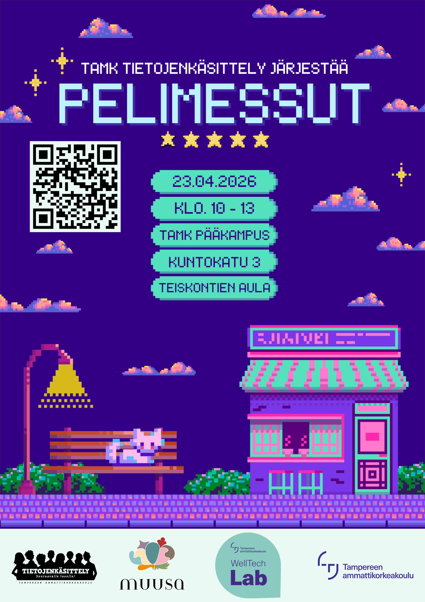
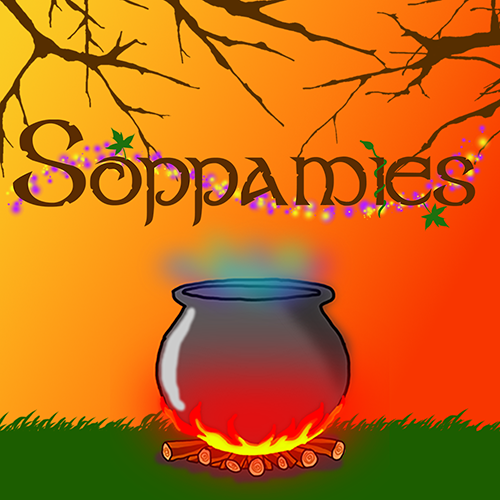
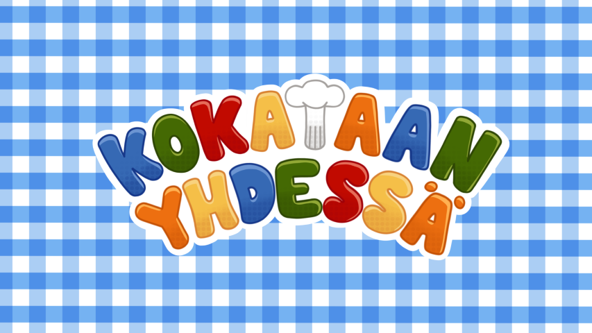
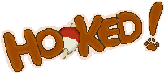
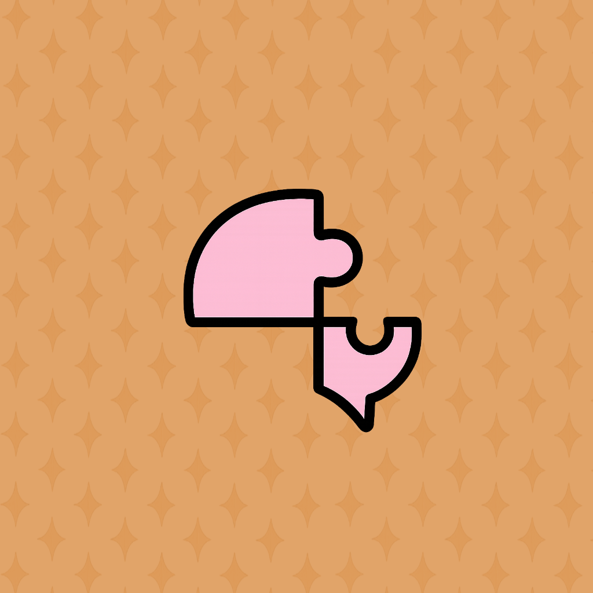
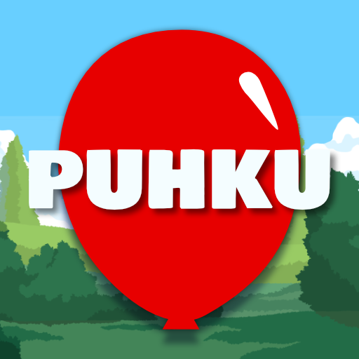
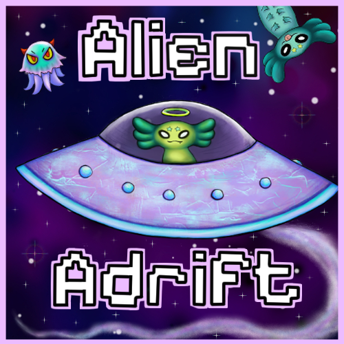

25Tikon tekemät pelit :3


Soppamies on MUUSA -projektia varten kehitetty arvopohjainen peli, jossa pelaaja löytää itsensä mysteerisestä metsästä. Kaikki väri on kadonnut maailmasta. Kaikki on tasaisen harmaata eikä mikään oikein tunnu miltään. Pelaaja löytää Soppamiehen metsästä, joka antaa hänelle tehtävän sekä lyhdyn. Pelaajan pitää etsiä erilaisia ainesosia ja värit palautuvat pikku hiljaa takaisin maailmaan. Soppamies keittää sopan hänelle ainesosista ja näin hän löytää taas itsensä.
TrapMouse -peli toimii eräänlaisena testinä selvittääkseen onko pelin pelaaja etsijä, etenijä vai edistäjä. Pelissä ohjaat hiirtä (eläin) ja tehtävänä on päästä labyrintista ulos. Tapoja läpäistä labyrintti on kolme, ja tapa millä läpäiset labyrintin kertoo mihin sijoitut tässä etsijä-etenijä-edistäjä-pyramidissa. Labyrintin läpäisyn jälkeen pelaaja vastaa kymmeneen kysymykseen jotka auttavat määrittämään sijoittumisen e-pyramidissa.
Väistele meteoriitteja, kerää tähtipölyä ja vastaa universumin kysymyksiin. Lumo on Muusa-projektia varten kehitetty avaruusseikkailu, joka vaatii sekä nopeita refleksejä että pysähtymistä omien arvojen äärelle. Matkan varrella kohtaat portteja, joiden kohdalla joudut tekemään valintoja joista jokainen ohjaa sinua lähemmäksi lopuksi paljastuvaa Muusa-rooliasi.
Pyramid of Elements pelissä kerätään labyrintin sisällä avaimia, joilla avataan lukollisia ovia, joista pääsee pyramidin huipulle. Avaimia suojelevat viholliset ja sinun pitää väistellä niitä. Huoneissa voi olla mentorin esittämiä arvokysymyksiä tai vihollisia. Pelissä päämekaniikka on liikkuminen joystickillä ja boostilla..
Hauskempi ja mielenkiintoisempi tapa pelaajalle arvioida, mitä arvoja hänellä on. Fishing Filosofy on lyhyt ja ytimekäs kalastuspeli, jossa jokainen kala edustaa arvoa, ja pelaajan on arvioitava, kuinka tärkeitä nämä arvot ovat hänelle yksilönä. Kun peli on loppu ja kaikki kalat on pyydystetty, pelaajalle esitetään arvoprofiili, joka näyttää, mitä arvoja hänellä on. Se on viihtyisä elämys, joka on suunniteltu käytettäväksi työelämässä olevien ja sinne siirtyvien MUUSA-mentorointiohjelmaan osallistuvien työkaluna.
Laivakatit laineilla on seikkailupeli, jossa teemana on kissat ja rento tunnelma. Pelissä vastaat kissojen esittämiin kysymyksiin, jotka kartuttavat lopullista pistemäärää joka sitten kertoo lopuksi arvosi. Peli on suunniteltu laajalle pelaajakunnalle, ja kaikki on alusta loppuun itsetehtyä. .

"Kokataan yhdessä" on yhteistyöhön kannustava kahden pelaajan kokkauspeli, jossa voit oppia kokkauksen ja kommunikaation perusteita rauhallisessa ympäristössä. Valitkaa resepti, työskennelkää yhdessä ja nauttikaa pelistä omassa tahdissanne. Ei rangaistuksia tai aikarajoitteita. Pelin tavoite on yksinkertainen: opi ja pidä hauskaa. Tämä on kokkauspeli kaikille!

Jätä kiireinen kaupunki taaksesi ja mene tapaamaan isoisäkissaasi hänen mökillensä, luvassa on hauska ja jännittävä kalastusreissu! Hooked! on peli joka testaa käyttäjän refleksejä kaloilla jotka yrittävät karata, mutta ole varuillasi! Paikalliset ovat huomanneet järveen heitettyjen roskien määrän kasvaneen! Yritä pitää kalat turvassa roskilta samalla kun väistelet niitä itsekin! Jää koukkuun!
Haasta itseäsi tässä klassikon modernissa paluussa! Pajatro on peli, jossa yrität tähdätä pelilaudan tiettyihin osioihin rajallisella määrällä poletteja kerätäksesi pisteitä. Päästäksesi seuraavalle tasolle sinun on ajateltava strategisesti, sillä jokainen liike riippuu sinusta. Luo oma pelityylisi valitsemalla laajasta arsenaalista erilaisia lisävoimia ja etene nopeammin tasojen läpi tässä roguelike arcadepelissä.

Peli näyttää sinulle vihreillä valoilla näppäinten oikean järjestyksen. Kun on sinun vuorosi, muistatko järjestyksen? Jos painat väärin, nappi välähtää punaisena ja muistisi joutuu koetukselle. Elämäsydämet kertovat, montako yritystä sinulla on vielä jäljellä. Kun sydämet loppuvat, pääset yrittämään uudelleen edellisestä tasosta. Memotapin tavoite on yksinkertainen: harjoita muistiasi, haasta itsesi ja palaa pelaamaan yhä uudelleen.

Puhku on opettavainen videopeli, joka on pelattavissa Android-laitteilla. Peli on suunnattu lapsille ja sen tavoitteena on opettaa sanojen muodostamista, motorisia taitoja ja aakkosia.
Tähtää ja Opi on lapsille suunnattu oppimispeli, jossa ideana on ratkaista ruudulle ilmestyvä laskutoimitus ja osua oikean vastauksen sisältämään maalitauluun. Peli opettaa matematiikkaa, sekä tukee toiminnallisuutta ja koordinaatiokykyä.

Alien Adrift on fysiikkaan perustuva kosketusnäytöllinen peli, jossa et ohjaa avaruusolentoasi vaan kaikkea hänen ympärillään. Lennätä pienet asteroidit pois tieltä, vedä isot painovoiman avulla sivuun, murskaa planeetat kerätäksesi lisäelämiä ja pidä Orlop aisoissa ennen kuin se aiheuttaa vahinkoa. Mitä kauemmin pidät kaaoksen hallinnassa, sitä enemmän pisteitä keräät!
Etsit vaihtelua elämääsi ja ostat epäilyttävän halvan akvaariokaupan laiturin varrelta omituiselta, foliohattuun pukeutuvalta vuokranantajalta. Pian selviää, miksi kauppa oli niin halpa: tämä rakennus on jatkuvien öisten avaruusoliohyökkäysten kohteena. Kauppiaana vietät päiväsi keräten ja ostaen uusia kaloja sekä päivittäen ja ylläpitäen akvaarioitasi. Yöllä puolustat akvaarioitasi muukalaisilta ja suojelet kalojasi ampumalla avaruusolioita laser blasterilla. Peli hyödyntää YETI-tabletin iskunkestävää kosketusnäyttöä, joten voit mätkiä avaruusolioita millä tahansa esineellä.